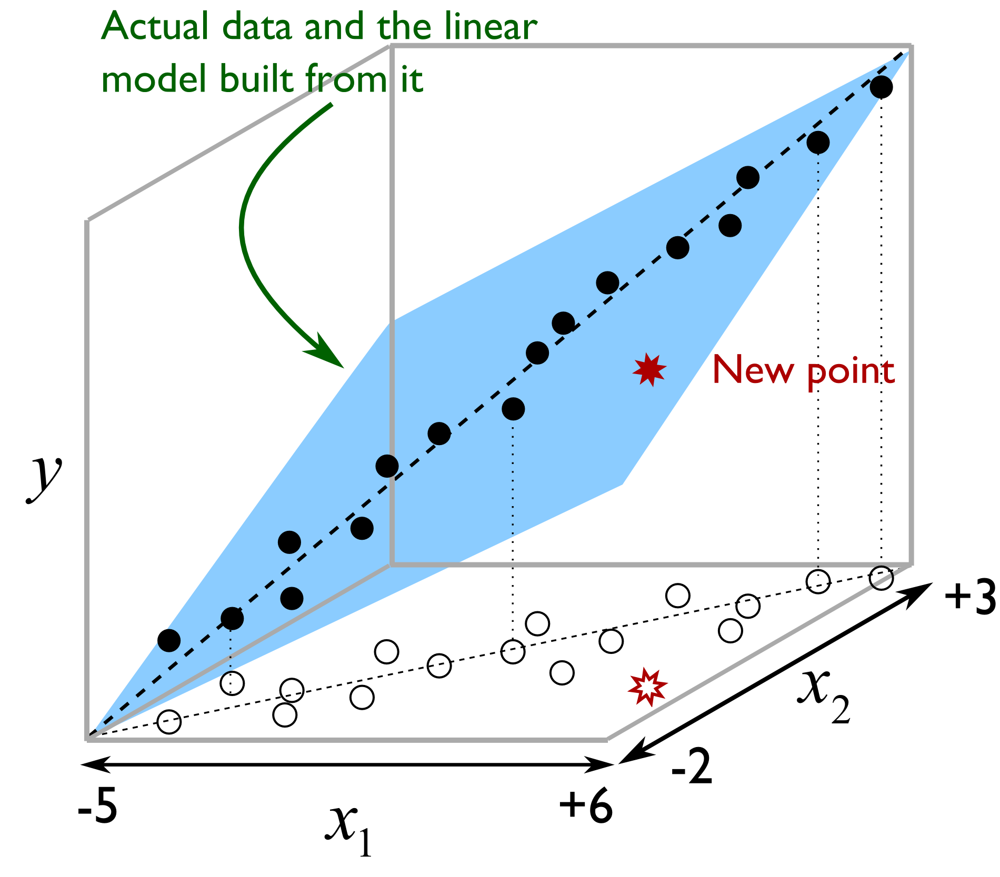
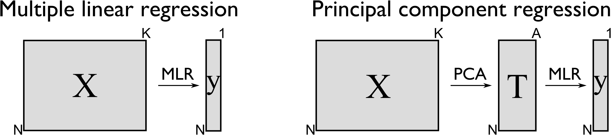

# Import all required libraries
# Data handling and manipulation
import pandas as pd
import numpy as np
# Implementing and selecting models
import statsmodels.api as sm
from itertools import combinations
from mlxtend.feature_selection import SequentialFeatureSelector as SFS
from statsmodels.stats.outliers_influence import variance_inflation_factor
from sklearn.model_selection import train_test_split, cross_val_score, KFold
from sklearn.linear_model import Ridge, RidgeCV, Lasso, LassoCV, ElasticNet, ElasticNetCV, LinearRegression
from sklearn.metrics import mean_squared_error, r2_score
from sklearn.decomposition import PCA
from sklearn.cross_decomposition import PLSRegression
from sklearn.pipeline import Pipeline
from sklearn.preprocessing import StandardScaler
# For advanced visualizations
import matplotlib.pyplot as plt
import seaborn as sns
# Show computation time
import time
# Increase font size of all Seaborn plot elements
sns.set(font_scale = 1.25)
# Set Seaborn theme
sns.set_theme(style = "white", palette = "colorblind")Regressions II
Data Mining and Discovery
Setup
Regressions II
Our data: Indoor air pollution
import janitor
pollution = pd.read_csv("data/merged_pollution.csv", encoding = 'iso-8859-1')
pollution = janitor.clean_names(pollution)
pollution.head()| entity | year | access_clean_perc | gdp | popn | death_rate_asp | |
|---|---|---|---|---|---|---|
| 0 | 0 | 2000.0 | -1.371886 | 0.000000 | -0.104197 | 371.951345 |
| 1 | 0 | 2001.0 | -1.353313 | 0.000000 | -0.102565 | 368.490253 |
| 2 | 0 | 2002.0 | -1.330292 | -0.877632 | -0.100603 | 355.870851 |
| 3 | 0 | 2003.0 | -1.302300 | -0.875238 | -0.098471 | 350.188748 |
| 4 | 0 | 2004.0 | -1.276925 | -0.877087 | -0.096407 | 341.858106 |
| variable | class | description |
|---|---|---|
| entity | character | Country, unique number identifier |
| year | double | Year |
| access_clean_perc | double | % of population with access to clean cooking fuels |
| gdp | double | GDP per capita, PPP (constant 2017 international $) |
| popn | character | Country population |
| death_rate_asp | double | Cause of death related to air pollution from solid fuels, standardized |
<class 'pandas.core.frame.DataFrame'>
RangeIndex: 3264 entries, 0 to 3263
Data columns (total 6 columns):
# Column Non-Null Count Dtype
--- ------ -------------- -----
0 entity 3264 non-null int64
1 year 3264 non-null float64
2 access_clean_perc 3264 non-null float64
3 gdp 3264 non-null float64
4 popn 3264 non-null float64
5 death_rate_asp 3264 non-null float64
dtypes: float64(5), int64(1)
memory usage: 153.1 KB| entity | year | access_clean_perc | gdp | popn | death_rate_asp | |
|---|---|---|---|---|---|---|
| count | 3264.000000 | 3264.00000 | 3.264000e+03 | 3.264000e+03 | 3.264000e+03 | 3264.000000 |
| mean | 95.500000 | 2008.00000 | -1.349683e-16 | 8.707632e-18 | 4.353816e-17 | 70.587846 |
| std | 55.433366 | 4.89973 | 1.000153e+00 | 1.000153e+00 | 1.000153e+00 | 87.057969 |
| min | 0.000000 | 2000.00000 | -1.598171e+00 | -9.067143e-01 | -1.451953e-01 | 0.005738 |
| 25% | 47.750000 | 2004.00000 | -1.064244e+00 | -7.425174e-01 | -1.417803e-01 | 1.090309 |
| 50% | 95.500000 | 2008.00000 | 4.424448e-01 | -3.377230e-01 | -1.295730e-01 | 23.828597 |
| 75% | 143.250000 | 2012.00000 | 9.444564e-01 | 3.119429e-01 | -9.508658e-02 | 135.902705 |
| max | 191.000000 | 2016.00000 | 1.013911e+00 | 5.036683e+00 | 1.458832e+01 | 474.973060 |
Multiple regression
Code
# Assuming pollution DataFrame is predefined
X = pollution[['year', 'access_clean_perc', 'gdp', 'popn']]
y = pollution['death_rate_asp']
# Train-test split
X_train, X_test, y_train, y_test = train_test_split(X, y, test_size = 0.2, random_state = 42)
# Adding a constant for OLS
X_train_with_const = sm.add_constant(X_train)
X_test_with_const = sm.add_constant(X_test)
# Fitting the OLS model
model = sm.OLS(y_train, X_train_with_const).fit()
# Making predictions
y_pred = model.predict(X_test_with_const)
# Calculating MSE
mse = mean_squared_error(y_test, y_pred)
print(f'Mean Squared Error: {mse:.2f}')
# Extracting Adjusted R-squared from the model's summary
r2 = r2_score(y_test, y_pred)
print(f'R-squared: {r2:.4f}')Mean Squared Error: 1526.64
R-squared: 0.8002Regularization
A technique used in regression to avoid overfitting by shrinking the coefficient estimates to 0.
Two main methods:
Ridge Regression
Lasso Regression
…but also note cross-validation for hyperparameter tuning
Ridge regression
VIF quantifies multicollinearity in OLS regressions
Assesses how much variation is increased by multicollinearity
High VIF indicated that predictor variables can be linearly predicted by each other
Formula
\(VIF_j = \frac{1}{1-R^{2}_j}\)
\(VIF_j\) is the Variance Inflation Factor for the \(j^{th}\) predictor variable.
\(R^{2}_j\) is the coefficient of determination obtained by regressing the \(j^{th}\) predictor variable against all other predictor variables.
Ranges from 1-5 (or 10)
\(RSS + \lambda \sum_{j=1}^{p} \beta_j^2\)
Where \(j\) ranges from 1 to \(p\) and \(\lambda \geq 0\)
\(\sum_{j=1}^{p} \beta_j^2\) is the L2 normalization term
Penalized Regression: Adds a penalty to OLS to regularize coefficients, aiding in handling multicollinearity and reducing complexity.
Coefficient Shrinkage: Coefficients shrink towards zero, enhancing stability and accuracy.
L2 Regularization: Employs squared coefficient sum as a penalty, regulated by \(\lambda\).
Bias-Variance Trade-off: Slightly increases bias to reduce variance, preventing overfitting.
Efficient Computation: Features a closed-form solution, ensuring computational efficiency.
No Feature Elimination: Maintains all features due to non-zero coefficients, unlike Lasso.
Effective in \(p > n\): Remains effective when predictors outnumber observations.
Interpretability: Less interpretable because all predictors are included.
Investigate VIF
VIFs = [variance_inflation_factor(X.values, i) for i in range(X.shape[1])]
for idx, vif in enumerate(VIFs):
print(f"VIF for column {X.columns[idx]}: {vif}")VIF for column year: 1.000000034024503
VIF for column access_clean_perc: 1.6782080674029214
VIF for column gdp: 1.6785951365989462
VIF for column popn: 1.0005167748859174EntityandYearhave relatively high VIFRemaining columns relatively low VIF
Ridge regression: applied
Code
X_train, X_test, y_train, y_test = train_test_split(X, y, test_size = 0.2, random_state = 42)
# Add a constant to the model (for statsmodels)
X_train_const = sm.add_constant(X_train)
X_test_const = sm.add_constant(X_test)
# Initialize the Ridge Regression model
ridge_reg = Ridge(alpha = 1) # Alpha is the regularization strength; adjust accordingly
# Fit the model
ridge_reg.fit(X_train, y_train)
# Predict on the testing set
y_pred = ridge_reg.predict(X_test)
# Calculate and print the MSE
mse = mean_squared_error(y_test, y_pred)
print(f'Mean Squared Error: {mse}\n')
# Since Ridge doesn't provide AIC, BIC directly, we focus on what's available
print(f'R-squared: {r2}')Mean Squared Error: 1526.7075294439708
R-squared: 0.8002256325350543Model tuning
Optimizing the hyperparameters of a machine learning model to enhance its performance. The process aims to find the best combination of hyperparameters that results in the most accurate predictions for a given dataset.
Key points:
Hyperparameters: Pre-set parameters influencing model behavior, not derived from data.
Search Methods: Techniques like Grid Search and Random Search to explore hyperparameter spaces.
Cross-Validation: Essential for assessing model generalizability during tuning.
Performance Metrics: Criteria like accuracy or MSE to evaluate hyperparameter efficacy.
Computational Cost: Potentially high, depending on hyperparameter space complexity.
Model tuning: Ridge regression
# Define a set of alpha values
alphas = np.logspace(-6, 6, 13)
# Initialize RidgeCV
ridge_cv = RidgeCV(alphas = alphas, store_cv_results = True)
# Fit the model
ridge_cv.fit(X_train, y_train)
# Best alpha value
print(f'Best alpha: {ridge_cv.alpha_}')
# Re-initialize and fit the model with the best alpha
best_ridge = Ridge(alpha = ridge_cv.alpha_)
best_ridge.fit(X_train, y_train)
# Make new predictions
y_pred_best = best_ridge.predict(X_test)Best alpha: 0.1# Calculate R-squared
r2_best = r2_score(y_test, y_pred_best)
print(f'R-squared with best alpha: {r2_best}')
# Calculate Mean Squared Error (MSE)
mse_best = mean_squared_error(y_test, y_pred_best)
print(f'Mean Squared Error with best alpha: {mse_best}')R-squared with best alpha: 0.8002247655359724
Mean Squared Error with best alpha: 1526.6464586641102# Assuming `y_pred` are the predictions from the initial Ridge model
mse_initial = mean_squared_error(y_test, y_pred)
r2_initial = r2_score(y_test, y_pred)
# Print comparison
print(f'Initial MSE: {mse_initial}, Best Alpha MSE: {mse_best}')
print(f'Initial R-squared: {r2_initial}, Best Alpha R-squared: {r2_best}')Initial MSE: 1526.7075294439708, Best Alpha MSE: 1526.6464586641102
Initial R-squared: 0.8002167738825702, Best Alpha R-squared: 0.8002247655359724Lasso regression
\(RSS + \lambda \sum_{j=1}^{p} |\beta_j|\)
Where \(j\) ranges from 1 to \(p\) and \(\lambda \geq 0\)
\(\sum_{j=1}^{p} |\beta_j|\) is the L1 normalization term
Penalized Regression: Implements OLS with an added L1 penalty on coefficients’ absolute values to reduce complexity and tackle multicollinearity.
Feature Selection: Effectively zeroes out less significant coefficients, offering built-in feature selection for model simplicity.
L1 Regularization: Uses \(\sum_{j=1}^{p} |\beta_j|\) as the penalty, with \(λ\) tuning the penalty’s strength.
Bias-Variance: Increases bias to lower variance, aiding in overfitting prevention.
Computation: May require iterative optimization, lacking a closed-form solution, especially in high-dimensional datasets.
Sparse Solutions: Ideal for models expecting many non-influential features, providing sparsity.
Interpretability: Enhances model interpretability by retaining only relevant features.
Lasso regression: applied
Code
# Prepare the data (assuming X and y are already defined)
X_train, X_test, y_train, y_test = train_test_split(X, y, test_size = 0.2, random_state = 42)
# Initialize the Lasso Regression model
lasso_reg = Lasso(alpha = 1.0) # Alpha is the regularization strength; adjust accordingly
# Fit the model
lasso_reg.fit(X_train, y_train)
# Predict on the testing set
y_pred = lasso_reg.predict(X_test)
# Calculate and print the MSE
mse = mean_squared_error(y_test, y_pred)
print(f'Mean Squared Error: {mse}')
# Since Lasso doesn't provide AIC, BIC directly, we focus on what's available
r2 = r2_score(y_test, y_pred)
print(f'R-squared: {r2}')Mean Squared Error: 1535.3995053262377
R-squared: 0.7990793517178111Model tuning: Lasso regression
# Define a range of alpha values for Lasso
alphas = np.logspace(-6, 6, 13)
# Initialize LassoCV
lasso_cv = LassoCV(alphas = alphas, cv = 5, random_state = 42)
# Fit the model
lasso_cv.fit(X_train, y_train)
# Optimal alpha value
print(f'Optimal alpha: {lasso_cv.alpha_}')
# Re-initialize and fit the model with the optimal alpha
best_lasso = Lasso(alpha = lasso_cv.alpha_)
best_lasso.fit(X_train, y_train)
# Make new predictions
y_pred_best = best_lasso.predict(X_test)Optimal alpha: 1e-06# Calculate R-squared with the best alpha
r2_best = r2_score(y_test, y_pred_best)
print(f'R-squared with optimal alpha: {r2_best}')
# Calculate Mean Squared Error (MSE) with the best alpha
mse_best = mean_squared_error(y_test, y_pred_best)
print(f'Mean Squared Error with optimal alpha: {mse_best}')R-squared with optimal alpha: 0.8002256319833501
Mean Squared Error with optimal alpha: 1526.6398374288794# Assuming `y_pred` are the predictions from the initial Lasso model
mse_initial = mean_squared_error(y_test, y_pred)
r2_initial = r2_score(y_test, y_pred)
# Print comparison
print(f'Initial MSE: {mse_initial}, Optimal Alpha MSE: {mse_best}')
print(f'Initial R-squared: {r2_initial}, Optimal Alpha R-squared: {r2_best}')Initial MSE: 1535.3995053262377, Optimal Alpha MSE: 1526.6398374288794
Initial R-squared: 0.7990793517178111, Optimal Alpha R-squared: 0.8002256319833501Elastic net regression
\(RSS + \lambda_1 \sum_{j=1}^{p} |\beta_j| + \lambda_2 \sum_{j=1}^{p} \beta_j^2\)
Where \(j\) ranges from 1 to \(p\) and \(\lambda \geq 0\)
\(\sum_{j=1}^{p} |\beta_j|\) is the L1 normalization term, which encourages sparsity in the coefficients
\(\sum_{j=1}^{p} \beta_j^2\) is the L2 normalization term, which encourages smoothness in the coefficients by penalizing large values.
Combines L1 and L2 Penalties: Merges Ridge and Lasso advantages for multicollinearity and feature selection.
Optimizes Feature Selection: L1 part zeroes out insignificant coefficients; L2 part shrinks coefficients to manage multicollinearity.
Requires Parameter Tuning: Optimal \(\lambda_1\) and \(\lambda_2\) balance feature elimination and coefficient reduction.
Mitigates Overfitting: Adjusts bias-variance trade-off, reducing overfitting risk.
Iterative Optimization: No closed-form solution due to L1 penalty; relies on optimization methods.
Effective in High Dimensions: Suitable for datasets with more features than observations.
Balances Sparsity and Stability: Ensures model relevance and stability through L1 and L2 penalties.
Enhances Interpretability: Simplifies the model by keeping only relevant predictors, improving model interpretability.
Elastic net regression: applied
Code
# Assuming X and y are already defined and preprocessed
X_train, X_test, y_train, y_test = train_test_split(X, y, test_size = 0.2, random_state = 42)
# Initialize the Elastic Net Regression model with a mix of L1 and L2 regularization
elastic_net = ElasticNet(alpha = 1.0, l1_ratio = 0.5) # Adjust alpha and l1_ratio accordingly
# Fit the model
elastic_net.fit(X_train, y_train)
# Predict on the testing set
y_pred = elastic_net.predict(X_test)
# Calculate and print the MSE and R-squared
mse = mean_squared_error(y_test, y_pred)
r2 = r2_score(y_test, y_pred)
print(f'Mean Squared Error: {mse}')
print(f'R-squared: {r2}')Mean Squared Error: 2258.2143010254194
R-squared: 0.7044926224424362Model tuning: Elastic net regression
# Define a range of alpha values and l1_ratios for Elastic Net
alphas = np.logspace(-6, 6, 13)
l1_ratios = np.linspace(0.1, 0.9, 9)
# Initialize ElasticNetCV
elastic_net_cv = ElasticNetCV(alphas = alphas, l1_ratio = l1_ratios, cv = 5, random_state = 42)
# Fit the model to find the optimal alpha and l1_ratio
elastic_net_cv.fit(X_train, y_train)
# Optimal alpha and l1_ratio
print(f'Optimal alpha: {elastic_net_cv.alpha_}')
print(f'Optimal l1_ratio: {elastic_net_cv.l1_ratio_}')
# Re-initialize and fit the model with the optimal parameters
best_elastic_net = ElasticNet(alpha=elastic_net_cv.alpha_, l1_ratio=elastic_net_cv.l1_ratio_)
best_elastic_net.fit(X_train, y_train)
# Make new predictions
y_pred_best = best_elastic_net.predict(X_test)Optimal alpha: 0.0001
Optimal l1_ratio: 0.1# Calculate R-squared with the best parameters
r2_best = r2_score(y_test, y_pred_best)
print(f'R-squared with optimal parameters: {r2_best}')
# Calculate Mean Squared Error (MSE) with the best parameters
mse_best = mean_squared_error(y_test, y_pred_best)
print(f'Mean Squared Error with optimal parameters: {mse_best}')R-squared with optimal parameters: 0.8002235829823968
Mean Squared Error with optimal parameters: 1526.6554955261286# Print comparison of MSE and R-squared before and after tuning
mse_initial = mean_squared_error(y_test, y_pred)
r2_initial = r2_score(y_test, y_pred)
print(f'Initial MSE: {mse_initial}, Optimal Parameters MSE: {mse_best}')
print(f'Initial R-squared: {r2_initial}, Optimal Parameters R-squared: {r2_best}')Initial MSE: 2258.2143010254194, Optimal Parameters MSE: 1526.6554955261286
Initial R-squared: 0.7044926224424362, Optimal Parameters R-squared: 0.8002235829823968Summary: regularization
Reduces Overfitting: Regularization (Ridge, Lasso, Elastic Net) constrains model complexity, preventing overfitting by penalizing large coefficients.
Parameter Optimization via CV: Cross-validation determines the optimal regularization strength (λ), ensuring model generalizability.
Feature Selection with Lasso: Lasso (L1 penalty) zeroes out less significant coefficients, enabling automatic feature selection.
Ridge Tackles Multicollinearity: Ridge regression (L2 penalty) minimizes collinearity effects among predictors by evenly shrinking coefficients.
Elastic Net Merges Penalties: Elastic Net combines L1 and L2 penalties, ideal for correlated features and high-dimensional data, with CV tuning for optimal balance.
CV Enhances Model Accuracy: Cross-validation across multiple folds improves accuracy and reliability of the chosen regularization parameter.
Supports Sparse Solutions: Lasso and Elastic Net support sparse solutions, effectively reducing model complexity by selecting only relevant features.
Bias-Variance Trade-off: Regularization adjusts the bias-variance trade-off, slightly increasing bias but significantly reducing variance.
High dimensionality
Dimensional reduction: revisited
Dimension reduction techniques reduce the number of input variables in a dataset. In regression, these methods can help mitigate issues related to multicollinearity, overfitting, and the curse of dimensionality, particularly in high-dimensional data.
Two main methods:
- Principal components regression (PCR)
- Partial least squares (PLS)
Principal components regression (PCR)



PCR involves two major steps—Principal Component Analysis (PCA) for dimensionality reduction, followed by regression on these principal components.
PCA Transformation
\(Z=XW\)
Where \(X\) is the original dataset, \(W\) represents the weight matrix for PCA, and \(Z\) contains the principal components (PCs).
Regression on PCs
\(\hat{Y} = ZB + \epsilon\)
Where \(\hat{Y}\) is the predicted outcome, \(Z\) are the PC predictors, \(B\) is the coefficient matrix, \(\epsilon\) is the error term
Dimensionality Reduction: Transforms predictors into fewer uncorrelated principal components.
Overcomes Multicollinearity: Uses orthogonal components, mitigating multicollinearity in the original predictors.
Extracts Informative Features: Captures most data variance through principal components, enhancing model efficiency.
Challenging Interpretation: Coefficients relate to principal components, complicating interpretation relative to original predictors.
Critical Component Selection: Involves choosing the optimal number of components based on variance explained or cross-validation.
Requires Standardization: PCA step necessitates variable scaling to ensure consistent variance across features.
No Direct Feature Elimination: While reducing dimensions, PCR retains linear combinations of all features, unlike methods that select individual variables.
Principal components regression: applied
Code
# Assuming X and y are already defined
X_train, X_test, y_train, y_test = train_test_split(X, y, test_size = 0.2, random_state = 42)
# Standardizing the features
scaler = StandardScaler()
# PCA for dimensionality reduction
pca = PCA()
# Linear Regression
lin_reg = LinearRegression()
# Creating a pipeline for PCR
pipeline = Pipeline([('scaler', scaler), ('pca', pca), ('lin_reg', lin_reg)])
# Fit the PCR model
pipeline.fit(X_train, y_train)
# Predict on the testing set
y_pred = pipeline.predict(X_test)
# Evaluate the model
mse = mean_squared_error(y_test, y_pred)
r2 = r2_score(y_test, y_pred)
print(f'Mean Squared Error: {mse}')
print(f'R-squared: {r2}')Mean Squared Error: 1526.639833212853
R-squared: 0.8002256325350545Model tuning: PCR
Code
# Function to calculate MSE with cross-validation
def cv_mse(n_components):
pipeline = Pipeline([
('scaler', StandardScaler()),
('pca', PCA(n_components = n_components)),
('lin_reg', LinearRegression())
])
mse = -cross_val_score(pipeline, X_train, y_train, scoring = 'neg_mean_squared_error', cv = 5).mean()
return mse
# Testing different numbers of components
components_range = range(1, min(len(X_train.columns), len(X_train)) + 1)
mse_scores = [cv_mse(n) for n in components_range]
# Find the optimal number of components
optimal_components = components_range[np.argmin(mse_scores)]
print(f'Optimal number of components: {optimal_components}')
# Re-fit the PCR model with the optimal number of components
pipeline.set_params(pca__n_components = optimal_components)
pipeline.fit(X_train, y_train)
# New predictions and evaluation
y_pred_opt = pipeline.predict(X_test)
mse_opt = mean_squared_error(y_test, y_pred_opt)
r2_opt = r2_score(y_test, y_pred_opt)
print(f'Optimized Mean Squared Error: {mse_opt}')
print(f'Optimized R-squared: {r2_opt}')Optimal number of components: 4
Optimized Mean Squared Error: 1526.639833212853
Optimized R-squared: 0.8002256325350545# Comparing initial and optimized model performances
print(f'Initial vs. Optimized MSE: {mse} vs. {mse_opt}')
print(f'Initial vs. Optimized R-squared: {r2} vs. {r2_opt}')Initial vs. Optimized MSE: 1526.639833212853 vs. 1526.639833212853
Initial vs. Optimized R-squared: 0.8002256325350545 vs. 0.8002256325350545Partial least squares regression (PLS)
PLS focuses on predicting response variables by finding the linear regression model in a transformed space. It differs from PCR by considering the response variable \(Y\) when determining the new feature space.
PLS Transformation
\(T=XW^{*}\)
Where \(X\) is the original dataset, \(W^{*}\) represents the weight matrix for PLS, and \(T\) represents the scores (latent variables).
Regression on PCs
\(\hat{Y} = TB + \epsilon\)
Where \(T\) are the PLS latent variables (predictors), \(B\) is the coefficient matrix, \(\epsilon\) is the error term
Dimensionality Reduction and Prediction: Reduces predictor dimensions while considering response variable \(Y\), optimizing for predictive power.
Handles Multicollinearity: By generating latent variables, PLS mitigates multicollinearity, similar to PCR but with a focus on prediction.
Incorporates Response in Feature Extraction: Unlike PCR, PLS extracts features based on their covariance with \(Y\), enhancing relevant feature capture.
Component Selection is Crucial: The number of latent variables (components) is key to model performance, typically determined via cross-validation.
Standardization May Be Necessary: Just like PCR, variable scaling can be important depending on the data characteristics.
Suitable for High-Dimensional Data: Effective in scenarios where predictors far exceed observations.
Direct Interpretation Challenging: Coefficients apply to latent variables, complicating direct interpretation relative to original predictors.
Parial least squares regression: applied
Code
# Assuming X and y are already defined
X_train, X_test, y_train, y_test = train_test_split(X, y, test_size = 0.2, random_state = 42)
# Initialize PLS Regression model
pls = PLSRegression(n_components = 2) # Adjust n_components as needed
# Fit the model
pls.fit(X_train, y_train)
# Predict on the testing set
y_pred = pls.predict(X_test)
# Calculate and print the MSE and R-squared
mse = mean_squared_error(y_test, y_pred)
r2 = r2_score(y_test, y_pred.flatten()) # Flatten if y_pred is 2D
print(f'Mean Squared Error: {mse}')
print(f'R-squared: {r2}')Mean Squared Error: 1534.9008172660479
R-squared: 0.7991446094751546Model tuning: PLS
Code
# Function to perform cross-validation and calculate MSE
def cv_mse_pls(n_components):
pls = PLSRegression(n_components = n_components)
mse = -cross_val_score(pls, X_train, y_train, scoring='neg_mean_squared_error', cv=5).mean()
return mse
# Determining the optimal number of components
components_range = range(1, min(len(X_train.columns), len(X_train)) + 1)
mse_scores = [cv_mse_pls(n) for n in components_range]
# Optimal number of components
optimal_components = components_range[np.argmin(mse_scores)]
print(f'Optimal number of components: {optimal_components}')
# Re-fit PLS model with the optimal number of components
pls.set_params(n_components = optimal_components)
pls.fit(X_train, y_train)
# New predictions and evaluation
y_pred_opt = pls.predict(X_test)
mse_opt = mean_squared_error(y_test, y_pred_opt)
r2_opt = r2_score(y_test, y_pred_opt.flatten())
print(f'Optimized Mean Squared Error: {mse_opt}')
print(f'Optimized R-squared: {r2_opt}')Optimal number of components: 3
Optimized Mean Squared Error: 1526.5692627318958
Optimized R-squared: 0.8002348673086326# Comparing initial and optimized model performances
print(f'Initial vs. Optimized MSE: {mse} vs. {mse_opt}')
print(f'Initial vs. Optimized R-squared: {r2} vs. {r2_opt}')Initial vs. Optimized MSE: 1534.9008172660479 vs. 1526.5692627318958
Initial vs. Optimized R-squared: 0.7991446094751546 vs. 0.8002348673086326Considerations in high dimensions
Overfitting in High-Dimensional Data: Models may capture noise as signal, leading to overfitting.
Curse of Dimensionality: Increased dimensionality exponentially expands data space, causing data sparsity and learning difficulties.
Multicollinearity Risks: More features increase the likelihood of correlated predictors, destabilizing models.
Use of Regularization: Techniques like Lasso and Ridge effectively address high-dimensional challenges by shrinking coefficients and simplifying models.
Model Simplification: PCR and PLS reduce variable count, aiding interpretability.
Feature Importance Analysis: Identifying influential features becomes harder in high dimensions; Lasso’s feature selection is beneficial.
Need for Dimensionality Reduction: Essential for crafting robust, interpretable models in high-dimensional scenarios.
Conclusions
| Model | MSE | \(R^{2}\) |
|---|---|---|
| Multiple regression (OLS, best fit) | 1526.64 | 0.8002 |
| Ridge regression (best \(\lambda\)) | 1526.646 | 0.8002 |
| Lasso regression (best \(\alpha\)) | 1526.64 | 0.8002 |
| Elastic net (best \(\lambda, \alpha\)) | 1526.655 | 0.8002 |
| Principle components (best # components) | 1526.64 | 0.8002 |
| Partial least squares (best # components) | 1526.57 | 0.8002 |
Occam’s Razor loses!
Simpler Models: A model with fewer predictors may achieve lower MSE without significantly improving explanation, resulting in lower Adjusted R-squared.
Scale & Variance: Models on low-variance data can show lower MSE but not necessarily higher Adjusted R-squared, reflecting prediction efficiency over variance explanation.
Balance: Overfit models might have lower MSE but lower Adjusted R-squared, indicating poor generalization versus models that balance complexity and predictive power.
Split Variability: Train-test split differences can affect MSE more than Adjusted R-squared, especially with test set anomalies.
Error Patterns: Models with evenly distributed errors tend to have higher Adjusted R-squared even if MSE is slightly higher, compared to those with uneven error distribution.
In-class Exercise
Go to ex-08 and perform the tasks